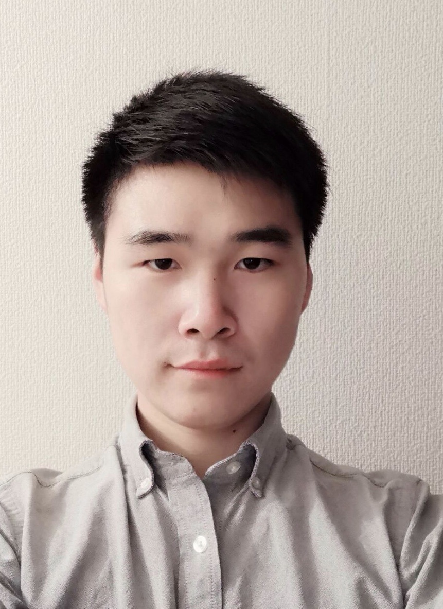

生年月日:1997年03月11日
性別：男
住所：東区多の津
履歴:
２０１７年初めて日本に来て、「九州外国語学院」で2年間日本語を勉強していました。
２０１９年に学校の勧めで現在の「九州産業大学造形短期大学部」に在学しています。
２０２０年に帰国し、コロナが爆発して本国に滞在し、学校では単位が足りなくて卒業できないため、1年間継続しています。
２０２１年在学中。
キャリア：なし
趣味: ゲーム、アニメ、旅行、撮影、絵画が好きです。